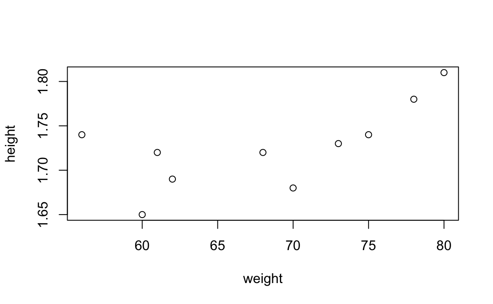

第3章 数据处理
在本章中我们将讲解如何利用特定扩展包，高效处理数据集。
3.1 magrittr 管道操作符：流式编程
3.1.1 magrittr介绍
magrittr包被定义为一个高效的管道操作工具包，通过管道的连接方式，让数据或表达式的传递更高效，使用操作符%>%，可以直接把数据传递给下一个函数调用。
magrittr包有两个主要目标:
- 第一是减少代码开发时间，提高代码的可读性和维护性
- 第二是让你的代码更短
magrittr包，主要定义了4个管道操作符，分别是:
%>%, Forward pipe operator，向右操作符，主操作符
将左边的结果传递给右边的函数作为第一个参数值，其结果可以继续又右边传递
%T>%，Tee operations，向左操作符
与
%>%的区别是其结果不能向右传递，继续向右传递的是%T>%左边的结果，%T>%通常用来输出图形、打印结果到屏幕或者输出到文件，然后继续%>%操作
%$%，Pipe with exposition of variables，解释操作符
通常左边是数据框，
%$%之后右边函数可直接通过使用该数据框的变量
%<>%，Compound assignment pipe operations，复合赋值管道操作符
只能出现在最左边的对象之后，用于在一长串处理管道操作之后直接赋值到最左边的对象上
magrittr的项目主页： https://github.com/smbache/magrittr
3.1.2 管道操作符
3.1.2.1 %>% 和 %T%
install.packages("magrittr") # 第一次使用前先从 CRAN 安装 magrittr 包library(magrittr) # 使用前载入 magrittr 包%>% 主管道操作符的基本用法：x 是一个数据对象, f(data, p = value) 是一个函数
- x %>% f() 等价于 f(x)
- x %>% f(p = value) 等价于 f(data = x, p = value)
- x %>% f(p = .) 等价于 f(data = x, p = x) ；这里的
.代表从左边传递过来的对象（没有名字故而使用.替代）[这个说法不太严谨，暂且先这么用] - x %>% f1() %>% f2() 等价于 f2(f1(x))
%T>% 操作符的基本用法：
- x %T>% f() 等价于 f(x)
- x %T>% f1() %>% f2() 等价于 f1(x); f2(x)
如果只是做一次管道传递是没必要定义这样特殊操作符的，通常情况下是一连串的管道操作才其优势。
这里对员工数据集中出生日期向量做操作案例，目的是筛选出在1900年后出生的员工，并计算这些人出生年份的中位数。
这里先将出生日期按照字符串处理，而不是用日期函数来直接提取，使得多几个操作步骤，以显示管道操作符的便捷性。
birthday %>%
as.character() %>% # 先将 Date 类转化为字符型
substr(1, 4) %>% # 提取字符串，从第1个字符到第4个字符，年份
as.integer() %>% # 将出生年份字符转化为整数型
set_names(name) %>% # 将员工名字赋值给生年份的结果向量
subset(. >= 1990) %T>% # 使用 . 代表从左边传递过来的对象
print() %>% # %T>% 之后操作结果不作为下一个操作符的结果
median # 当一个函数没有其他参数时可省略函数的括号
#> 张伟 李元礼 杨伯侨 赵蜚廉 沈约度 陈淮阳 况天佑 王珍珍
#> 1990 1992 1991 1990 1993 1991 1991 1992
#> [1] 1991其中 set_names 是 magrittr 中的函数，set_names(x, name) 等价于 names(x) <- name。这里将其定位为f(x, p = value) 的形式，便于在管道符操作中使用函数。
上面出生年份的示例，如果不使用管道操作符，有两种传统写法，分别如下：
分步顺序操作，使用临时变量
temp <- as.character(birthday)
temp <- substr(temp, 1, 4)
temp <- as.integer(temp)
names(temp) <- name # 或者 magrittr 中的函数 set_names(temp, name)
temp <- subset(temp, temp >= 1990)
print(temp)
#> 张伟 李元礼 杨伯侨 赵蜚廉 沈约度 陈淮阳 况天佑 王珍珍
#> 1990 1992 1991 1990 1993 1991 1991 1992
median(temp)
#> [1] 1991函数嵌套
temp <- set_names(as.integer(substr(as.character(birthday), 1, 4)), name)
temp <- subset(temp, temp >= 1990) # subset 中用到了两次同一个变量，这里用一个中间临时变量还方便些
print(temp) # print 和 meian 两次不同的输出，还得使用一次中间变量
#> 张伟 李元礼 杨伯侨 赵蜚廉 沈约度 陈淮阳 况天佑 王珍珍
#> 1990 1992 1991 1990 1993 1991 1991 1992
median(temp)
#> [1] 1991分步操作中需要多次书写同一个变量名称，较为繁琐；过多的函数嵌套时，不便于理解操作步骤且容易输错。
管道操作符使得程序逻辑更为通顺便于理解，减少中间结果的重复输入。
代码最佳书写风格是，在每个管道操作符后换行，便于执行选择前半部分操作执行结果，或者注释中间操作。
3.1.2.2 %$%
管道操作符对所有数据对象有效，而不仅仅是向量，我们来看数据框计算的例子。
使用 employee 数据集，做 subset 子集筛选，和直接用其中的变量作图和计算
employee %>%
subset(gender == "男") %$% #筛选男性
plot(weight, height) # %$% 之后可直接使用data.frame中的variables，做散点图
employee %>%
subset(islocal = TRUE) %$% #筛选本地
cor(weight, height) # %$% 之后可直接使用数据框中的变量，计算相关系数
#> [1] 0.666
3.1.2.3 %<>%
有时候我们需要将管道操作后最后的结果赋值给最初的对象以更新其结果，这时可以用%<>%操作符。
建议，在最初的时候还是使用%>%操作符，在确认最终的结果正确后需要该写初始对象，则再修改第一个操作符为%<>%。
temp <- seq(1:10)
print(temp)
#> [1] 1 2 3 4 5 6 7 8 9 10
temp %<>% # 将管道操作最后一个结果返回给最开始的 temp
sqrt %>%
log # 最后的结果重新复制给 temp；等价于 log 之后的结果 -> temp
print(temp) # 验证 temp 是否已经改变
#> [1] 0.000 0.347 0.549 0.693 0.805 0.896 0.973 1.040 1.099 1.1513.1.3 运算符号的通用函数
在管道操作中间过程，有时会用到一些算术符号运算，在 maggrittr 中做一些常用的运算符号定义为通用函数，使其可以像普通函数那样调用，且支持直接使用操作符，但需要用特殊符号将其标记。
# 将身高数值从单位为米转化为厘米，并包含“厘米”转化字符串输出
height %>% `*` (100) %>% paste0(sep = "厘米")
#> [1] "173厘米" "168厘米" "172厘米" "165厘米" "166厘米" "162厘米" "181厘米"
#> [8] "174厘米" "178厘米" "171厘米" "172厘米" "169厘米" "174厘米" "170厘米"
#> [15] "172厘米"
height %>% multiply_by(100) %>% paste0(sep = "厘米") # multiply_by 是 `*` 乘法符号的函数写法
#> [1] "173厘米" "168厘米" "172厘米" "165厘米" "166厘米" "162厘米" "181厘米"
#> [8] "174厘米" "178厘米" "171厘米" "172厘米" "169厘米" "174厘米" "170厘米"
#> [15] "172厘米"通用函数和操作符号一栏表
| 函数 | 操作符 |
|---|---|
| extract | [ |
| multiply_by | * |
| extract2 | [[ |
| inset | [<- |
| inset2 | [[<- |
| use_series | $ |
| add | + |
| subtract | - |
| multiply_by | * |
| raise_to_power | ^ |
| multiply_by_matrix | %*% |
| divide_by | / |
| divide_by_int | %/% |
| mod | %% |
| is_in | %in% |
| and | & |
| or | | |
| equals | == |
| is_greater_than | > |
| is_weakly_greater_than | >= |
| is_less_than | < |
| is_weakly_less_than | <= |
not (n'est pas) |
! |
| set_colnames | colnames<- |
| set_rownames | rownames<- |
| set_names | names<- |
在后续章节的综合数据处理过程中，将会大量使用到 magrittr 中管道操作符，有需要特别指出的时候会做做进一步说明。
3.2 dplyr 数据表处理语法
3.2.1 dplyr介绍
dplyr包是从plyr演化而来，关注处理 data.frame 等对象的表格形式数据。该包有三个主要目标：
- 简化表格数据的预处理过程
- 用C++重写了计算底层以提高性能
- 统一了接口函数，使得处理 data.frame 等对象和数据库中的表对象保持一致
前两个目标和在一起就是提高处理 data.frame 的效率；至于数据库处理留存专门的读写数据库章节中再讲解。
dplyr的项目主页： https://github.com/hadley/dplyr
3.2.2 单表操作的 6 个主函数
dplyr提供了6个主函数来处理 data.frame。
我们可以用数据库SQL查询语句的关键字来做类比。
数据库中单表操作的主要语法是
select
from
where
group by
order by dplyr 中主操作函数是
- select() 列筛选，类似于 SQL 中的 select
- filter() 行筛选，类似于 SQL 中的 where
- arrage() 排序，类似于 SQL 中的 order by
- group_by 分组，类似于 SQL 中的 group by
- summarise() 汇总，类似于 SQL 中的 aggregate Functions
- muate() 变形, 类似于 SQL 中的 analytic functions / window funtions
RStudio 官网上有一个关于 dplyr 的速查表，是最佳学习资源，强烈推荐！
Data Wrangling Cheat Sheet https://www.rstudio.com/resources/cheatsheets/
install.packages("dplyr") # 第一次使用之前先从 CRAN 中安装library(dplyr) # 使用之前载入
# 特别要说明的是，dplyr 已经预置了管道操作符 %>%
# 可直接使用 管道操作符 %>% 而不用再单独载入 magrittr3.2.2.1 列筛选 select
在 base 中 data.frame 的子集筛选通常使用 subset() 包含了筛选行的条件 subset 以及列筛选条件 select。
在 dplyr 中 参数 subset 逻辑表达式拆分出来成为 filter() 函数，而参数 select 也被拆分出来独立出来成为 select() 函数。
独立拆分使得行列筛选功能变得更为强大，也使其方便在管道操作符、分步流式编程中更为方便。
select() 函数用来做 data.frame 的变量筛选，最基本地，支持整数位置索引。
#> height weight
#> 宋子启 1.73 73
#> 张伯仲 1.68 70
#> 孟轲舆 1.72 68在 dplyr 中，主函数的第一个参数对象都是 data.frame ，其后的参数即可直接使用 variables 。
employee %>% select(height, weight) %>% head(3)
#> height weight
#> 宋子启 1.73 73
#> 张伯仲 1.68 70
#> 孟轲舆 1.72 68
# 从某个变量A到变量B中所有变量（包含A和B）
employee %>% select(height:birthday) %>% head(3)
#> height weight islocal gender grade birthday
#> 宋子启 1.73 73 TRUE 男 中 1984-02-28
#> 张伯仲 1.68 70 TRUE 男 良 1988-09-26
#> 孟轲舆 1.72 68 FALSE 男 良 1989-07-28在 select 中，编写了辅助选取变量名的匹配函数，用来高效完成有规则的变量筛选。
# 包含字符 ght 的变量（普通匹配）
employee %>% select(contains("ght")) %>% head(3)
#> height weight
#> 宋子启 1.73 73
#> 张伯仲 1.68 70
#> 孟轲舆 1.72 68
# 以字符 de 结尾的变量 (正则匹配)
employee %>% select(matches(".*de$")) %>% head(3)
#> grade
#> 宋子启 中
#> 张伯仲 良
#> 孟轲舆 良3.2.2.2 行筛选 filter
filter()中的筛选，与 subset() 中的 subset 逻辑表达式最大的不同是，filter()中多个逻辑条件可以用逗号隔开（他们之间的逻辑是 & 的关系）, 类似于 SQL 中 where 各个条件中间用 and 隔开，使得书写更为自然。
employee %>% filter(height >= 1.75)
#> name height weight islocal gender grade birthday
#> 1 李元礼 1.81 80 FALSE 男 中 1992-06-14
#> 2 赵蜚廉 1.78 78 FALSE 男 中 1990-08-08
# 多个 & 的逻辑表达式，可用逗号隔开
employee %>% filter(height >= 1.70, gender == "女")
#> name height weight islocal gender grade birthday
#> 1 蒋欣 1.71 54 FALSE 女 良 1985-05-10
#> 2 王珍珍 1.70 53 TRUE 女 中 1992-01-31
#> 3 马小玲 1.72 82 TRUE 女 优 1988-02-14行筛选还有一些函数来实现类似于SQL中的用法，对于连接的数据库表对象，可直接使用 dplyr 函数，而不用通过 SQL 语法。
3.2.2.2.1 结果排重
排重函数 distinct() 类似于 SQL 中的 disttinct 关键字，用来排除有重复记录的行
distinct(employee)
#> name height weight islocal gender grade birthday
#> 1 宋子启 1.73 73 TRUE 男 中 1984-02-28
#> 2 张伯仲 1.68 70 TRUE 男 良 1988-09-26
#> 3 孟轲舆 1.72 68 FALSE 男 良 1989-07-28
#> 4 张伟 1.65 60 TRUE 男 中 1990-01-25
#> 5 王雪梅 1.66 55 FALSE 女 优 1987-04-30
#> 6 陈梦妍 1.62 52 FALSE 女 良 1989-12-20
#> 7 李元礼 1.81 80 FALSE 男 中 1992-06-14
#> 8 杨伯侨 1.74 75 TRUE 男 优 1991-07-01
#> 9 赵蜚廉 1.78 78 FALSE 男 中 1990-08-08
#> 10 蒋欣 1.71 54 FALSE 女 良 1985-05-10
#> 11 沈约度 1.72 61 TRUE 男 良 1993-04-01
#> 12 陈淮阳 1.69 62 TRUE 男 中 1991-03-05
#> 13 况天佑 1.74 56 FALSE 男 良 1991-09-25
#> 14 王珍珍 1.70 53 TRUE 女 中 1992-01-31
#> 15 马小玲 1.72 82 TRUE 女 优 1988-02-143.2.2.2.2 Top / Bottom
top_n()函数，用来筛选 data.frame 的前 N 行记录，类似于 SQL Server 中的 top 、 MySQL 中 limit 、Oracle 中的 rownum 关键字。
top_n(x, n, wt)用法
- 参数 x 是继承 data.frame 的数据表对象，如果 x 是包含分组信息的表对象 ，则 top_n 就是返回每个分组中的 n 行结果；没有分组的 data.frame 是分为一组的特殊情况
- 参数 n 是返回结果的行数，可以是正整数，返回正序的前 n 行；如果是负数，返回倒序的后 n 行
- 参数 wt 是排序的权重字段，是可选项，如果没有指定，则以最后一个字段为排序；这里的排序只是用来做筛选条件的排序，但不会将结果重新排列
# 筛选前3行，按照最后一个字段排序的前3个
employee %>% top_n(3)
#> Selecting by birthday
#> name height weight islocal gender grade birthday
#> 1 李元礼 1.81 80 FALSE 男 中 1992-06-14
#> 2 沈约度 1.72 61 TRUE 男 良 1993-04-01
#> 3 王珍珍 1.70 53 TRUE 女 中 1992-01-31
# 指定 wt ，等到年龄最小的3名员工(birthday的数值最大)
employee %>% top_n(3, wt = birthday)
#> name height weight islocal gender grade birthday
#> 1 李元礼 1.81 80 FALSE 男 中 1992-06-14
#> 2 沈约度 1.72 61 TRUE 男 良 1993-04-01
#> 3 王珍珍 1.70 53 TRUE 女 中 1992-01-31
# 筛选得到体重最轻的3名员工
employee %>% top_n(-3, wt = weight)
#> name height weight islocal gender grade birthday
#> 1 陈梦妍 1.62 52 FALSE 女 良 1989-12-20
#> 2 蒋欣 1.71 54 FALSE 女 良 1985-05-10
#> 3 王珍珍 1.70 53 TRUE 女 中 1992-01-313.2.2.2.3 随机排序筛选，随机抽样
随机抽样有两个行数，sample_n() 是指定抽出 n 行，sample_frac() 是指定抽取总行数的百分比。
还有其他两个参数可选，一个是 replace 为抽样是否放回，默认是否；另一个参数是 weight 指定权重，默认不指定。
同样地，如果 data.frame 是分组的数据表，则按每组返回随机抽样结果。
随机抽样，类似于 SQL Server 中的 order by newid()、MySQL中 ordery rand()、Oracle 中 order by dbms_random.value() 并且还要加上筛选 n 个结果的条件。
# 指定 wt ，等到年龄最小的3名员工(birthday的数值最大)
employee %>% sample_n(3)
#> name height weight islocal gender grade birthday
#> 张伯仲 张伯仲 1.68 70 TRUE 男 良 1988-09-26
#> 陈淮阳 陈淮阳 1.69 62 TRUE 男 中 1991-03-05
#> 杨伯侨 杨伯侨 1.74 75 TRUE 男 优 1991-07-01
# 总行数 15 * 抽样比例 0.3 = 4.5 再向下取整得到 4
employee %>% sample_frac(0.3)
#> name height weight islocal gender grade birthday
#> 孟轲舆 孟轲舆 1.72 68 FALSE 男 良 1989-07-28
#> 宋子启 宋子启 1.73 73 TRUE 男 中 1984-02-28
#> 李元礼 李元礼 1.81 80 FALSE 男 中 1992-06-14
#> 陈梦妍 陈梦妍 1.62 52 FALSE 女 良 1989-12-203.2.2.2.4 指定行范围
切片函数 slice() 用来筛选 data.frame 的行，等价于 data.frame[n:m,]，使用的是行号的整数位置筛选。
类似于，在 SQL 中先获得行号 row_number ，然后在 where 中指定 row_number 的范围。
employee %>% slice(3:8) # 不使用 %>% 则写为 slice(employee, 3:8) # 等价于 employee[3:8,]
#> name height weight islocal gender grade birthday
#> 1 孟轲舆 1.72 68 FALSE 男 良 1989-07-28
#> 2 张伟 1.65 60 TRUE 男 中 1990-01-25
#> 3 王雪梅 1.66 55 FALSE 女 优 1987-04-30
#> 4 陈梦妍 1.62 52 FALSE 女 良 1989-12-20
#> 5 李元礼 1.81 80 FALSE 男 中 1992-06-14
#> 6 杨伯侨 1.74 75 TRUE 男 优 1991-07-013.2.2.3 结果重排序 arrange
在 base 包中对 data.frame 做排序需要使用 order() 函数，并使用 [,] 做索引筛选；
用 dplyr 包中的 arrage() 函数语法上更为简洁，且可以使用 %>% 作为管道操作的中间过程。
employee[order(employee$gender, -employee$height),] %>% head(3) # base 中的方式
#> name height weight islocal gender grade birthday
#> 李元礼 李元礼 1.81 80 FALSE 男 中 1992-06-14
#> 赵蜚廉 赵蜚廉 1.78 78 FALSE 男 中 1990-08-08
#> 杨伯侨 杨伯侨 1.74 75 TRUE 男 优 1991-07-01
employee %>% arrange(gender, desc(height)) %>% head(3) # dplyr 中 arrange 函数更为简洁
#> name height weight islocal gender grade birthday
#> 1 李元礼 1.81 80 FALSE 男 中 1992-06-14
#> 2 赵蜚廉 1.78 78 FALSE 男 中 1990-08-08
#> 3 杨伯侨 1.74 75 TRUE 男 优 1991-07-013.2.2.4 增加一个新列 mutate
mutate() 函数在 dplyr 中用来增加新列，直接利用 data.frame 中的变量名即可创建；与 base 中的 transform() 函数类似，主要不同在于在创建多个新列时，可直接使用刚创建的新变量。
# base 中的 employee$bmi = employee$weight / (employee$height ^ 2) 方法有同样效果
# 但没有 mutate 简洁，且可使用管道操作符，流式编程
employee %>%
# 增加 bmi 新变量，可直接使用 weight 和 height 运算
mutate(bmi = weight / (height ^ 2)) %>%
head(3)
#> name height weight islocal gender grade birthday bmi
#> 1 宋子启 1.73 73 TRUE 男 中 1984-02-28 24.4
#> 2 张伯仲 1.68 70 TRUE 男 良 1988-09-26 24.8
#> 3 孟轲舆 1.72 68 FALSE 男 良 1989-07-28 23.0
employee %>%
mutate(bmi = weight / (height ^ 2),
log_bmi = log(bmi)) %>% # 可直接使用新变量运算
head(3)
#> name height weight islocal gender grade birthday bmi log_bmi
#> 1 宋子启 1.73 73 TRUE 男 中 1984-02-28 24.4 3.19
#> 2 张伯仲 1.68 70 TRUE 男 良 1988-09-26 24.8 3.21
#> 3 孟轲舆 1.72 68 FALSE 男 良 1989-07-28 23.0 3.13mutate() 函数是新增列，并且保持了原有列不变；如果只想要保留新增的列，可使用 transmute()函数，则结果只有新增加的列。
employee %>%
# 增加 bmi 新变量，可直接使用 weight 和 height 运算
transmute(bmi = weight / (height ^ 2)) %>%
head(3)
#> bmi
#> 1 24.4
#> 2 24.8
#> 3 23.0mutate() 中可直接使用 window funtion，比如 dplyr 中定义的 row_number() 函数，以及 base 中定义的 cumsum() 累计求和函数。
employee %>% # 给定员工信息表 employee
select(name, height, weight) %>% # 筛选 name, height, weight 三列
# 给员工编号，计算体重的累计求和
mutate(employee_no = row_number(),
cumsum_weight = cumsum(weight)) %>%
head(3) # 显示前3个结果
#> name height weight employee_no cumsum_weight
#> 1 宋子启 1.73 73 1 73
#> 2 张伯仲 1.68 70 2 143
#> 3 孟轲舆 1.72 68 3 211如果想要将某个 window funtion 应用在 data.frame 的所有列上，则可使用 mutate(x, funs(window_function))。其中 windwos functions 可以有多个函数，中间用逗号隔开。
新变量的名字，有应用变量的名称，加上函数名称，中间用下划线组成。
employee %>% # 给定员工信息表 employee
select(height, weight) %>% # 筛选 height 和 weight 两个变量
slice(3:5) %>% # 筛选第3到5行
# 对每个变量应用 cumsum 累计求和 与 cumprod 累计乘积函数
mutate_each(funs(cumsum, cumprod))
#> height weight height_cumsum weight_cumsum height_cumprod weight_cumprod
#> 1 1.72 68 1.72 68 1.72 68
#> 2 1.65 60 3.37 128 2.84 4080
#> 3 1.66 55 5.03 183 4.71 2244003.2.2.5 汇总 summarise
汇总就是将 data.frame 通过计算后汇总一个值或者说是一行结果。汇总函数(summary funtion)有很多，比如计数、求和、均值等，类似于 SQL 中的 aggregate funtion 。
employee %>%
summarise(employee_num = n(), # 计数，有多少记录数，n() 函数没有参数
avg_height = mean(height), # 平均身高
total_weight = sum(weight), # 总体重
unique_grade = n_distinct(grade) # 排重计数，统计有多少个不同的等级
)
#> employee_num avg_height total_weight unique_grade
#> 1 15 1.71 979 3类似于变形的 mutate_each()，汇总也有一个 summarise_each() 函数，用法相似。
employee %>% # 给定员工信息表 employee
select(height, weight) %>% # 筛选 height 和 weight 两个变量
# 对每个变量应用 mean 求平均值 和 与 sum 求总和
summarise_each(funs(mean, sum))
#> height_mean weight_mean height_sum weight_sum
#> 1 1.71 65.3 25.7 9793.2.2.6 分组 group_by
分组统计是数据表处理中非常重要的环节，在 dplyr 中，在对一个 data.frame 对象 group_by 后，该 data.frame 对象就会多了一个 group_by 的属性，对象的类也会变成 tbl ，是一个继承了 data.frame 的对象。
可以对一个 data.frame 只执行 group_by 操作，而不去汇总或者变形等计算。
# 按照 gender 和 islocal 分组
employee %>% group_by(gender, islocal)
#> Source: local data frame [15 x 7]
#> Groups: gender, islocal [4]
#>
#> name height weight islocal gender grade birthday
#> <fctr> <dbl> <dbl> <lgl> <fctr> <fctr> <date>
#> 1 宋子启 1.73 73 TRUE 男 中 1984-02-28
#> 2 张伯仲 1.68 70 TRUE 男 良 1988-09-26
#> 3 孟轲舆 1.72 68 FALSE 男 良 1989-07-28
#> 4 张伟 1.65 60 TRUE 男 中 1990-01-25
#> 5 王雪梅 1.66 55 FALSE 女 优 1987-04-30
#> 6 陈梦妍 1.62 52 FALSE 女 良 1989-12-20
#> .. ... ... ... ... ... ... ...
# 打印结果的时候可以看到，多出了一个信息
# Groups: gender, islocal
# 表示按照 gender, islocal 这两个字段分组如果想要解除一个分组的 data.frame ，可以使用 ungroup() 函数。
当然，如果分组之后什么都不做，那分组没什么意义。
分组后通常使用 summarise function 或者 window function 两类函数操作；分组字段默认会被保留；分组后的排序如果不指定，则按照先分组字段顺序排序，其他字段不做排序，除非指定结果排序。
summarise function 是将多行结果计算后返回一行结果；分组后组别有多少个，则返回多少个结果。
employee %>%
group_by(gender) %>% # 按性别分组
summarise(num = n(), # 统计每个组别的记录数
avg_height = mean(height), # 统计每个组别的平均身高
max_weight = max(weight) # 统计每个组别的最大体重
) %>%
arrange(desc(num)) # 按照 num 倒序排列
#> Source: local data frame [2 x 4]
#>
#> gender num avg_height max_weight
#> <fctr> <int> <dbl> <dbl>
#> 1 男 10 1.73 80
#> 2 女 5 1.68 82多个字段联合分组
# 如果分组有多个字段，则汇总结果是按照联合分组后统计的结果
employee %>%
group_by(gender, grade) %>% # 按性别和成绩等级分组
summarise(num = n(),
avg_height = mean(height),
max_weight = max(weight)
) %>%
arrange(gender, desc(grade)) # grade 是有序因子，“优”大于“差”，desc(grade) 指定从优到差排列
#> Source: local data frame [6 x 5]
#> Groups: gender [2]
#>
#> gender grade num avg_height max_weight
#> <fctr> <fctr> <int> <dbl> <dbl>
#> 1 男 优 1 1.74 75
#> 2 男 良 4 1.71 70
#> 3 男 中 5 1.73 80
#> 4 女 优 2 1.69 82
#> 5 女 良 2 1.67 54
#> 6 女 中 1 1.70 53SQL中在 group by 之后可以增加 having 字句用来对分组结果进行过滤。但在 dplyr 中没有对应 having 关键字的函数，因为该过程实际就是对分组汇总结果的条件筛选，直接增加一次 filter 的处理过程即可。
# 如果分组有多个字段，则汇总结果是按照联合分组后统计的结果
employee %>%
group_by(gender, grade) %>% # 按性别和成绩等级分组
summarise(num = n(),
avg_height = mean(height),
max_weight = max(weight)
) %>%
filter(num >= 2) %>% # 筛选至少包含两名员工的分组，类似 having 关键字
arrange(gender, desc(grade)) # grade 是有序因子，“优”大于“差”，desc(grade) 指定从优到差排列
#> Source: local data frame [4 x 5]
#> Groups: gender [2]
#>
#> gender grade num avg_height max_weight
#> <fctr> <fctr> <int> <dbl> <dbl>
#> 1 男 良 4 1.71 70
#> 2 男 中 5 1.73 80
#> 3 女 优 2 1.69 82
#> 4 女 良 2 1.67 54window function 是将多行结果计算后返回同样行数的结果；分组后组别有多少个，则返回每个分组的行数相同的结果，所有分组行数的总和还是等于总数据表的行数。
employee %>%
group_by(gender) %>%
arrange(gender, salary) %>% # 先按分组 gender 排序, 再按 salary 排序
# 按分组 gender ，累计求和 salary，其中 salary 以按从小到大排序
mutate(cumsum_salary = cumsum(salary))
#> Source: local data frame [15 x 10]
#> Groups: gender [2]
#>
#> name height weight islocal gender grade birthday salary title
#> <fctr> <dbl> <dbl> <lgl> <fctr> <fctr> <date> <dbl> <chr>
#> 1 张伟 1.65 60 TRUE 男 中 1990-01-25 7000 工程师
#> 2 李元礼 1.81 80 FALSE 男 中 1992-06-14 7200 分析师
#> 3 杨伯侨 1.74 75 TRUE 男 优 1991-07-01 7800 工程师
#> 4 张伯仲 1.68 70 TRUE 男 良 1988-09-26 8000 分析师
#> 5 况天佑 1.74 56 FALSE 男 良 1991-09-25 8800 分析师
#> 6 孟轲舆 1.72 68 FALSE 男 良 1989-07-28 9000 工程师
#> .. ... ... ... ... ... ... ... ... ...
#> Variables not shown: cumsum_salary <dbl>.多个字段联合分组
employee %>%
group_by(gender, title) %>%
# 先按第一个分组 gender 排序, 在按第二个分组 title排序，最后 salary 倒序
arrange(gender, title, desc(salary)) %>%
# 按分组 gender 和 title ，累计求和 salary，其中 salary 以按从大到小排序
mutate(cumsum_salary = cumsum(salary))
#> Source: local data frame [15 x 10]
#> Groups: gender, title [4]
#>
#> name height weight islocal gender grade birthday salary title
#> <fctr> <dbl> <dbl> <lgl> <fctr> <fctr> <date> <dbl> <chr>
#> 1 况天佑 1.74 56 FALSE 男 良 1991-09-25 8800 分析师
#> 2 张伯仲 1.68 70 TRUE 男 良 1988-09-26 8000 分析师
#> 3 李元礼 1.81 80 FALSE 男 中 1992-06-14 7200 分析师
#> 4 宋子启 1.73 73 TRUE 男 中 1984-02-28 12000 工程师
#> 5 沈约度 1.72 61 TRUE 男 良 1993-04-01 10000 工程师
#> 6 陈淮阳 1.69 62 TRUE 男 中 1991-03-05 9600 工程师
#> .. ... ... ... ... ... ... ... ... ...
#> Variables not shown: cumsum_salary <dbl>.3.2.3 summary & window function
在 dplyr 中 Summary Function 是汇总函数，在 SQL 中也被成为 Aggregate Function，聚合函数。
在 dplyr 中 Window Function 是窗口函数，在 SQL 中被称为 Analytic Function，分析函数。
Summary Function 是将多行结果计算后汇总为一行，Window Function 是将多行结果计算后返回相同行数的结果。这个定义更倾向于对数据表来说。
实际上，在 R 中使用对向量的计算描述更为合适。
Summary Function 是那些在对向量计算后只返回一个值的结果，比如 sum() 函数。 这里的待计算的向量不一定是单个向量对象，可以是包含多几个向量运算的结果的向量，比如 max(log(x) - nchar(y))，其中 max() 就是 Summary Function。
Window Function 是那些在对向量计算后返回相同长度的向量的函数，也就是向量化函数，包括初等数学函数，比如 log(), cumsum(), 也包括 字符串函数nchar()，甚至条件判断函数 ifelse()。重要的是不是函数的类型，是返回的结果。
当对一个向量作用某个函数之后，返回结果是一个值（长度为一的向量）就是 Summary Function；返回的结果是与作用向量长度相同的向量，则是 Window Function。
汇总函数和窗口函数，都可以在分组下使用；当然也可以在不分组的情况下使用，这时可以看做是只分为一组的特殊情况。
3.2.3.1 summary function 汇总函数
在 base 中很多的统计函数都是 summarise function 有很多，比如
employee %>%
group_by(title) %>%
summarise(min_height = min(height), # min 最小值
max_weight = max(weight), # max 最大值
avg_bmi = mean(weight / height ^2), # mean 均值
median_salary = median(salary), # meadin 中位数
var_salary = var(salary), # var 方差
sd_salary = sd(salary), # sd 标准差
iqr_salary = IQR(salary) # IQR 四分位距
)
#> Source: local data frame [2 x 8]
#>
#> title min_height max_weight avg_bmi median_salary var_salary sd_salary
#> <chr> <dbl> <dbl> <dbl> <dbl> <dbl> <dbl>
#> 1 分析师 1.62 80 20.6 8800 3606190 1899
#> 2 工程师 1.65 82 23.6 9300 2297143 1516
#> Variables not shown: iqr_salary <dbl>.在 dplyr 中定义了一些常用的位置和计数相关的函数，比如
employee %>%
group_by(gender) %>%
summarise(first_height = first(height), # 第一个值
last_weight = last(weight, order_by = grade), # 最后一个值，按照 grade 排序
nth_birthday = nth(birthday, n = 3), # 第 n 个值
employee_num = n(), # 计数，可以使用 leghth(variable) 来替换，但需要一个 variable 参数
distinct_grade = n_distinct(grade) # 排重计数
)
#> Source: local data frame [2 x 6]
#>
#> gender first_height last_weight nth_birthday employee_num distinct_grade
#> <fctr> <dbl> <dbl> <date> <int> <int>
#> 1 男 1.73 75 1989-07-28 10 3
#> 2 女 1.66 82 1985-05-10 5 3
# 其中 first, last , nth 都是有可选参数 order_by
# 注意，n() 是没有参数的汇总函数是可以自定义的。
所有通过对多个元素的向量，计算后返回一个值的函数，都是 summarise function 。
# 定义函数
eldest_age_calc <- function(x) {
library(lubridate) # 载入 lubridate ，利用 year() 函数
max_age <- max(year(Sys.Date()) - year(x))
return(max_age)
}
employee %>%
group_by(gender) %>%
summarise(eldest_age = eldest_age_calc(birthday), # 应用自定义函数
# 计算过程可以用表达式书写，如果过程不太长不影响阅读，则直接书写
# lubridate::year 是使用 lubridate 包中 year() 而不用加载这个函数包
youngest_age = min(lubridate::year(Sys.Date()) - lubridate::year(birthday)),
best_grade = first(grade, order_by = desc(grade)) # 分组中最佳成绩（有序因子按优到差排序）
)
#> Source: local data frame [2 x 4]
#>
#> gender eldest_age youngest_age best_grade
#> <fctr> <dbl> <dbl> <fctr>
#> 1 男 32 23 优
#> 2 女 31 24 优3.2.3.2 window function 窗口函数
在数据分析的SQL取数过程中，window function / analytic function 使用的相对少一些，算是比较高级的用法，就是那些带有 over() 关键字的函数，还经常与分组和排序配合使用。
-- Analytic Function Syntax
ANALYTIC_FUNCTION( argument-1, ..., argument-n )
OVER( [ window_partition_clause ]
[ window_order_clause ]) 在 dplyr 中介绍文档中，作者还专门书写了一个章节的内容来讲 window functions。
窗口函数相对来说比较高级的分析函数，用法也相比复杂，这里要重点讲解。
对数据分析师来说，从 SQL 转到 R 来做进一步的数据处理语言，那是因为在 R 语言中，相对 SQL 来说更容易编写处理分析函数。
在数据库系统中，分析师并非做系统开发，对 SQL 进一步编程能力相对匮乏，且多数时候也没有编写自定义函数的权限。
窗口函数，实际上就是用来处理列的函数，并且返回长度相同的列，多数情况下就是多数据做预处理。
窗口函数在 dplyr 的介绍文档中，是不包括哪些与行处理没有关系的普通函数的，比如 nchar() 统计字符个数等函数，可以说是狭义上的窗口函数。
下面重点介绍的就是狭义的窗口函数，这和 SQL 中的分析函数是想对应的，它们处理的都是相同的问题，只是处于在 R 和 SQL 两个不同的环境中。
因为普通函数太普通了，这里都没有介绍的必要。
从宏观角度来看，窗口函数可以分为三大类：
- 秩序和排序函数:
row_number(),min_rank(),dense_rank(),cume_dist(),percent_rank(),ntile() - 偏移函数:
lead()和lag() - 累积的汇总函数:
cumsum(),cummean(),cummin(),cummax(),cumprod(),cumall(),cumany(),pmin(),pmax()
3.2.3.2.1 Ranking functions
让我们先来构造一个简单的向量，应用排序函数，来辨析它们之间的区别。
x <- c(1, 1, 2, 2, 2)
row_number(x)
#> [1] 1 2 3 4 5
## row_number 排序并对每个只从小到达给定一个自增的序号，即使大小顺序相同
min_rank(x)
#> [1] 1 1 3 3 3
## min_rank 排序，对大小相同的值给相同的排名值，跳过中间的序号，从后面开始排次
## 如果有两个并列第一，则排名中没有第二，之后从第三开始
x <- c(1, 3, 2, 2, 2)
#> [1] 1 1 2 2 2
## dense_rank 排序，对大小相同的值给相同的排名值，不跳过中间的序号，继续排名次
## 排名可以有并列，但名次序号不跳过row_number 更多的是排序的序号，类似于元素排序后是几个序号（数据表则为行号）。
rank 更多的是排名次（秩），可以有并列名次（相同排名）； min 和 dense 的区别在于名次是有间隔的还是连续不间隔的。
默认排序都是从小到大、从低到高，正序排列；如果要倒序，则可使用 desc()，用法与 arrage() 函数中一致。
employee %>%
group_by(gender) %>%
mutate(employee_age = row_number(birthday), # 年龄从大到小
rank_salary = min_rank(desc(salary)) # 薪资从高到低
) %>%
arrange(gender, employee_age, desc(rank_salary)) %>%
select(-(2:4))
#> Source: local data frame [15 x 8]
#> Groups: gender [2]
#>
#> name gender grade birthday salary title employee_age rank_salary
#> <fctr> <fctr> <fctr> <date> <dbl> <chr> <int> <int>
#> 1 宋子启 男 中 1984-02-28 12000 工程师 1 1
#> 2 张伯仲 男 良 1988-09-26 8000 分析师 2 7
#> 3 孟轲舆 男 良 1989-07-28 9000 工程师 3 4
#> 4 张伟 男 中 1990-01-25 7000 工程师 4 10
#> 5 赵蜚廉 男 中 1990-08-08 9000 工程师 5 4
#> 6 陈淮阳 男 中 1991-03-05 9600 工程师 6 3
#> .. ... ... ... ... ... ... ... ...3.2.3.3 lag & lead
lag() 和lead() 函数，分别获取当前行所对应的前/后若干个偏移量的值，分别有四个参数：
- x 是列（变量）
- n 是偏移量（offset），为正整数，默认为 1，也就是前一个值，或者后一个值
- default 是超出记录窗口时的默认值，默认是 NA
- order_by 是排序，默认为 NULL，也就是按当前的顺序取偏移值
x <- 1:5
lag(x)
#> [1] NA 1 2 3 4
lead(x)
#> [1] 2 3 4 5 NA
lag(x, n = 2, default = 0)
#> [1] 0 0 1 2 3
# 向前 2 格取值，如果不存在则默认为 0
lead(x, n = 3, default = 999)
[1] 4 5 999 999 999
# 向后 3 格取值，如果不存在则默认为 999通常来说， lag 和 lead 的偏移量都是 1，用来做差异分析。
employee %>%
# 先排序
arrange(salary) %>%
# 后一个值与当前值相减，也就是计算前后两者的差异
mutate(salary_diff = lead(salary) - salary) %>%
select(name, salary, salary_diff)
#> name salary salary_diff
#> 1 张伟 7000 200
#> 2 李元礼 7200 600
#> 3 杨伯侨 7800 200
#> 4 张伯仲 8000 800
#> 5 陈梦妍 8800 0
#> 6 况天佑 8800 200
#> 7 孟轲舆 9000 0
#> 8 赵蜚廉 9000 500
#> 9 王雪梅 9500 100
#> 10 陈淮阳 9600 400
#> 11 沈约度 10000 0
#> 12 马小玲 10000 1000
#> 13 王珍珍 11000 1000
#> 14 宋子启 12000 800
#> 15 蒋欣 12800 NA3.2.3.4 Cumulative aggregates 累计聚合函数
累计聚合函数用得最多的是 cumsum() 累计求和，以及 cumsum() 累计求均值。
其他的累计聚合函数：累计求最大cummax()、累计求最小cummin()、累计乘积cumprod()等。
employee %>%
group_by(title) %>%
arrange(title, salary) %>%
mutate(salary_cumsum = cumsum(salary),
# mutate 中可以使用汇总函数 sum
# 每个分组得到一个结果
# 遵循循环补齐规则填充到每个组等长的向量
salary_total = sum(salary),
salary_pct = salary / salary_total
) %>%
select(name, salary, salary_cumsum, salary_total, salary_pct)
#> Adding missing grouping variables: `title`
#> Source: local data frame [15 x 6]
#> Groups: title [2]
#>
#> title name salary salary_cumsum salary_total salary_pct
#> <chr> <fctr> <dbl> <dbl> <dbl> <dbl>
#> 1 分析师 李元礼 7200 7200 66100 0.109
#> 2 分析师 张伯仲 8000 15200 66100 0.121
#> 3 分析师 陈梦妍 8800 24000 66100 0.133
#> 4 分析师 况天佑 8800 32800 66100 0.133
#> 5 分析师 王雪梅 9500 42300 66100 0.144
#> 6 分析师 王珍珍 11000 53300 66100 0.166
#> .. ... ... ... ... ... ...3.2.4 多表操作 join 和 combine
3.2.4.1 mutating joins
base 中的 merge() 函数可以用来合并数据框，但使用起来并不是那么顺手。
dplyr 中提供了有关 join 的函数来实现类似 SQL 中表连接功能。
a <- data.frame(x1 = c("A", "B", "C"), x2 = c(1, 2, 3), stringsAsFactors = FALSE)
b <- data.frame(x1 = c("A", "B", "D"), x3 = c("T", "F", "T"), stringsAsFactors = FALSE)
# left join
left_join(a, b, by = "x1") # by 是关联字段；关联不到的值变为 NA
#> x1 x2 x3
#> 1 A 1 T
#> 2 B 2 F
#> 3 C 3 <NA>
# 如果 by 省略则按相同变量名称来关联，但会给出一个警告信息
left_join(a, b)
#> Joining, by = "x1"
#> x1 x2 x3
#> 1 A 1 T
#> 2 B 2 F
#> 3 C 3 <NA>
# right join
right_join(a, b, by = "x1") # 右连接的结果是 b 在前
#> x1 x2 x3
#> 1 A 1 T
#> 2 B 2 F
#> 3 D NA T
# inner join
# 在 SQL 中 inner join 可以省略简化为 join, 但在 R 中不能省略，没有定义 join() 函数
inner_join(a, b, by = "x1")
#> x1 x2 x3
#> 1 A 1 T
#> 2 B 2 F
# full join
full_join(a, b, by = "x1") # 包含两个表中都有的值
#> x1 x2 x3
#> 1 A 1 T
#> 2 B 2 F
#> 3 C 3 <NA>
#> 4 D NA T表连接中字段名称不同时，可以在 by 中指定对应关系。
authors <- data.frame(
surname = I(c("Tukey", "Venables", "Tierney", "Ripley", "McNeil")),
nationality = c("US", "Australia", "US", "UK", "Australia"),
deceased = c("yes", rep("no", 4)))
books <- data.frame(
name = I(c("Tukey", "Venables", "Tierney",
"Ripley", "Ripley", "McNeil", "R Core")),
title = c("Exploratory Data Analysis",
"Modern Applied Statistics ...",
"LISP-STAT",
"Spatial Statistics", "Stochastic Simulation",
"Interactive Data Analysis",
"An Introduction to R"),
other.author = c(NA, "Ripley", NA, NA, NA, NA,
"Venables & Smith"))
# by 中两个变量的名称，与join中表之间有对应关系
# by 中第一个变量对应的是第一个表
inner_join(authors, books, by = c("surname" = "name"), copy = TRUE)
#> surname nationality deceased title other.author
#> 1 Tukey US yes Exploratory Data Analysis <NA>
#> 2 Venables Australia no Modern Applied Statistics ... Ripley
#> 3 Tierney US no LISP-STAT <NA>
#> 4 Ripley UK no Spatial Statistics <NA>
#> 5 Ripley UK no Stochastic Simulation <NA>
#> 6 McNeil Australia no Interactive Data Analysis <NA>
# 用不同变量名之间来关联看起来有点复杂
# 可以先将关联的字段名称改为相同的再关联会显得容易些
books %>%
rename(surname = name) %>%
inner_join(authors, copy = TRUE)
#> Joining, by = "surname"
#> surname title other.author nationality deceased
#> 1 Tukey Exploratory Data Analysis <NA> US yes
#> 2 Venables Modern Applied Statistics ... Ripley Australia no
#> 3 Tierney LISP-STAT <NA> US no
#> 4 Ripley Spatial Statistics <NA> UK no
#> 5 Ripley Stochastic Simulation <NA> UK no
#> 6 McNeil Interactive Data Analysis <NA> Australia no3.2.4.2 filtering joins
filtering join 只是将关联作为过滤条件，但不要被关联表的变量。
# 半连接
# 等价于 select a.* from a inner join b on a.x1 = b.x1
semi_join(a, b, by = "x1")
#> x1 x2
#> 1 A 1
#> 2 B 2
# 反连接
# 等价于 select a.* from a left join b on a.x1 = b.x1 where b.x3 is null
anti_join(a, b, by = "x1")
#> x1 x2
#> 1 C 33.2.5 合并 combine
y <- data.frame(x1 = c("A", "B", "C"), x2 = c(1, 2, 3), stringsAsFactors = FALSE)
z <- data.frame(x1 = c("B", "C", "D"), x2 = c(2, 3, 4), stringsAsFactors = FALSE)
# 并集(结果合并)
# 类似于 SQL 中 union all
rbind(y, z)
#> x1 x2
#> 1 A 1
#> 2 B 2
#> 3 C 3
#> 4 B 2
#> 5 C 3
#> 6 D 4
# 并集(结果排重)
# 类似于 SQL 中 union
union(y, z)
#> [[1]]
#> [1] "A" "B" "C"
#>
#> [[2]]
#> [1] 1 2 3
#>
#> [[3]]
#> [1] "B" "C" "D"
#>
#> [[4]]
#> [1] 2 3 4
# 交集
# 类似于 SQL 中 intersect
intersect(y, z)
#> data frame with 0 columns and 0 rows
# 差集
# 类似于 SQL 中 minus
setdiff(y, z)
#> x1 x2
#> 1 A 1
#> 2 B 2
#> 3 C 3